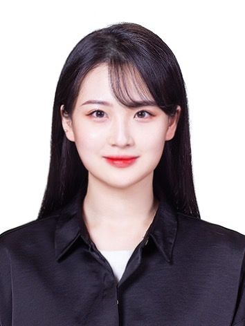

Chaehyun Kim

I am an M.S. student at Chung-Ang University (since March 2026).
My research focuses on computer vision for video understanding,
particularly human-centric and crowd anomaly detection
and video object segmentation.
I am also interested in multimodal learning.
📧 Email: reahyun828@gmail.com
Publications
Conference
[1] Auditing Observation-Quality Shortcuts in the Evaluation of
Person-Centered Motion for Video Anomaly Detection
C. Kim, C. Lim
WACV 2027 (Accepted)
[
arXiv]
Technical Report
[1] SAM3Dual: A 3rd Place Solution to the MOSEv2 Track,
8th LSVOS Challenge
J. Kim,
C. Kim, C. Lim
arXiv 2026
[
arXiv]
Challenges